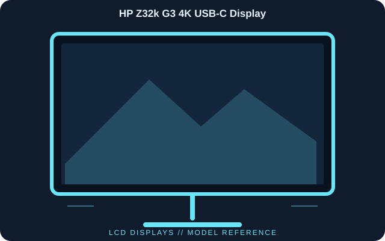

[ INDIVIDUAL COMPONENT // DISPLAYS ]
HP Z32k G3 4K USB-C Display
A 31.5-inch 4K IPS Black professional monitor integrating Thunderbolt 4 docking, wired networking and a USB hub.

IDENTIFICATION: HP Z32k G3 4K USB-C Display; 2022 generation. Verify the full model code, region and hardware revision on the unit label. Published specifications describe the identified configuration; its matching manual and label take precedence if revisions differ.
Published specifications
| Catalog subcategory | Lcd Displays |
|---|---|
| Exact model | HP Z32k G3 4K USB-C Display |
| Panel / native resolution | 31.5-inch IPS Black LCD, 3840 × 2160 (16:9) |
| Native refresh rate | 60 Hz |
| Typical brightness / contrast | 400 cd/m² / 2000:1 |
| Color | 1.07 billion colors; 10-bit signal support |
| Video inputs | Thunderbolt 4, DisplayPort 1.4 and HDMI |
| Dock connectivity | Thunderbolt downstream, USB-A hub and RJ45 Ethernet |
| Host power | Up to 100 W through Thunderbolt 4 |
Compatibility & connectivity notes
A USB-C connection carries video only when the host supports Thunderbolt 4 or DisplayPort Alt Mode; verify the laptop’s USB-C port and cable rating. 4K at 60 Hz requires an appropriate host output and cable. Ethernet and USB peripherals route through the monitor hub; host charging is capped at 100 W, so check the laptop’s own power requirement.
Preservation notes
Record the complete model suffix, serial/date code, input selection, source device, cable or adapter, tested timing and observed condition. Retain the matching regional manual and any calibration or service records with the display. Follow the manufacturer’s cleaning and service instructions; do not open CRT equipment without appropriate high-voltage training.
Manufacturer documentation & authoritative sources
- HP — Z32k G3 specificationsManufacturer documentation and model-specific reference. Original page is gone; this is the Internet Archive’s copy.
- HP — Z32k G3 user guides and support documentsManufacturer documentation and model-specific reference.